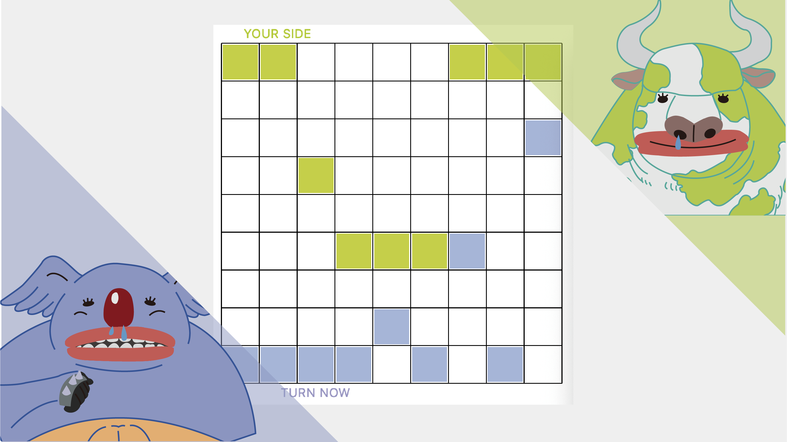
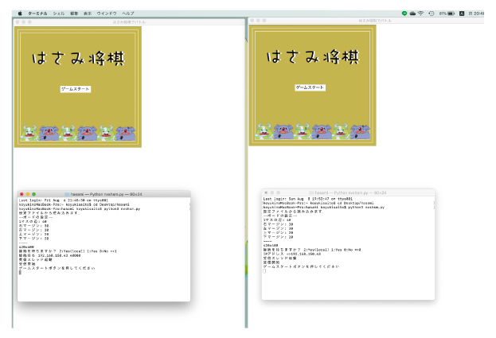
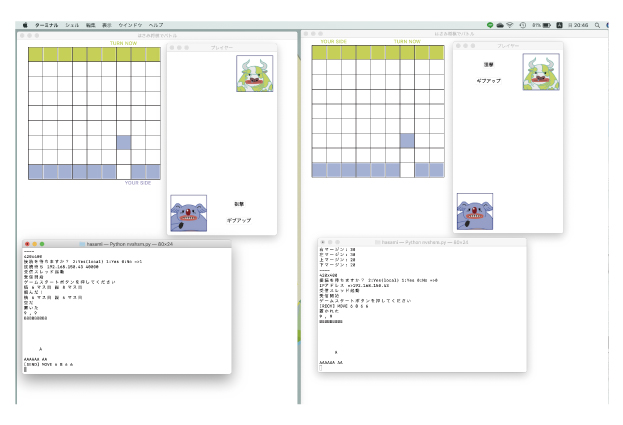
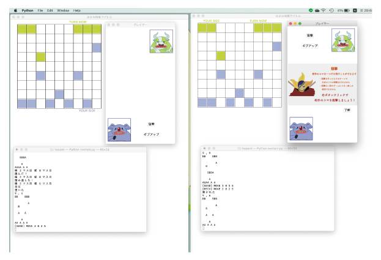
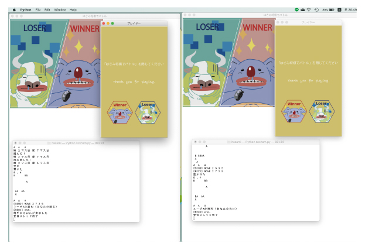
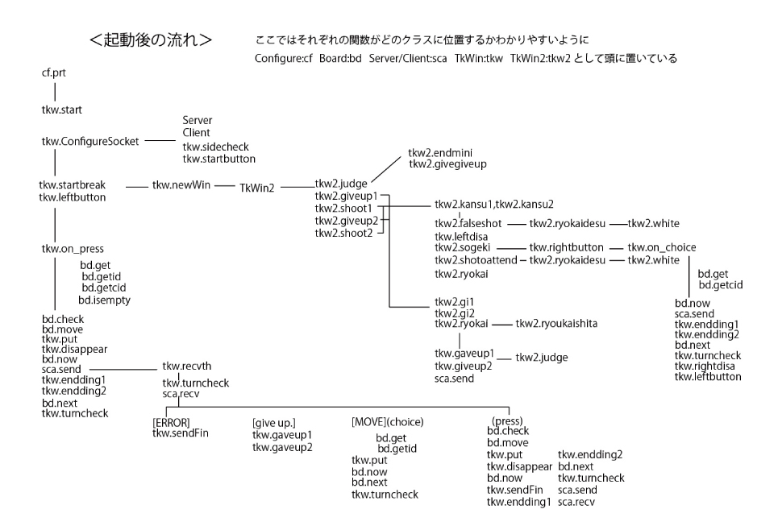

---Python---
対戦型はさみ将棋
WebSocketを用いた対戦型はさみ将棋
◴ 2020/6/4-2020/8/27 ✎ Python Illustrator

---Python---
対戦型はさみ将棋
WebSocketを用いた対戦型はさみ将棋
◴ 2020/6/4-2020/8/27
>✎ Python Illustrator
WORK
---実行画面の例---

クライアントとサーバーを決め、2人のプレイヤーでゲームを開始する。

一方が駒を動かすともう一方の駒も反映して同じように動く。 また、すでに駒が置いてあるマスには駒は置けず、駒を飛び越えて移動することもできない。 1ターンごとに順番は交代する。

対戦中自分の持ち駒が相手の持ち駒より少ない場合、一度だけ自分のターンで相手の駒を一つ選び狙撃することができる。

相手の持ち駒を自分の持ち駒で挟んで消し4個以下にすると勝利。 または、自分からギブアップすることもできる。
MECHANISM
---プログラムの構成---
関数sendを使って情報msgを送信→関数recvthで解読
「end.」が送られると関数sendFinに進み、ボード画面はエンディングに切り替わる。
それと同時にプレイヤー画面にカーソルが入るとエンディングに切り替わる設定になる。